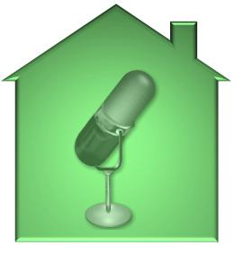

About Marvin
I have developed web sites using HTML & CSS for almost 20 years, while adding server-side and data capturing in the past 10 years.
" I am totally intrigued with the idea of creating something that the world would see, use and improve their life a little. I continue to add various programs and design tools to my arsenal of creation".
My Story starts here....
I'll get straight to it, my first website was a mess. I created it in 1997, when I started my online Christian clothing line at "www.jita.com". J.I.T.A. was an acronym for Jesus Is The Answer Clothing.
Did he just say his first web site was a mess? Well yes, didn't your first site come with a learning curve. Geesh give me a break.
Well back then it was awesome to me. I mean from a web design perspective it was really bad. That became painfully obvious to me when I contacted a Yahoo customer service rep to ask for some technical advice and was told that my website was horrible.
Not sure if that was a seg way into a sales pitch, pretty sure it was. I hung up, the nerve I was using Yahoo for hosting and building the site.
Every container on the site consisted of a text box specifically placed on the page and a iFrame container (not a div). It took me forever to make that web site, hahaha. I laugh now looking back, but at the time, man I was a BAD man you couldn't tell me nothing, I had a web site.
Committed to learning I never gave up practicing, researching, and growing. In 2009 I embarked on a new web venture with the idea that I would create a web community with very similar functionality as, MySpace, Facebook, and Twitter.
Why PHP?
The Birth of HomeGrownMusiq.com! My First PHP Site!
 HomeGrownMusiq.com had a lot of energy out the gate. Fun fact this was sort of around the time MySpace was all the rave and Facebook was being born. Back then people were starting to sign up and wait, I can't make that many web pages statically that fast.
The Dilemma
I created 100 hundred static web pages and now the page header is off on this page. Yup, I copied and pasted it on all the other pages, so all of those pages are off too, nice WTF. So fix the error and copy it into the other hundred pages, this is taking forever I need help. Artist are emailing me asking when can they get access to their page?
Lets just say it can't be done statically. HELLO WORLD!!!
In comes PHP and MySQL to save the day. We shut the site down and I embarked on the task of working a regular 9 to 5, while running a home studio, and learning PHP and MySQL.
I read and researched dynamic web programming langauges and ended up being even more confused.
- What is C?
- What is C#?
- Is C# different from C?
- What is C++?
- Is C++ better than C or C#?
- Do I need ASP?
- Or should I go with Java?
- Should I learn .NET?
- Learn PHP - What is that?
- Capture your data with MySQL, huh HOW?
I almost cried from the huge amount of free information out there regarding programming and open source.
In the end I settled on PHP, and worked on redesigning the site, dropping Yahoo's Sitekiller, (OPPPS! I meant Yahoo's Sitebuilder) and learning how to use Adobe's Dreamweaver IDE for the code hinting. Which I like to pause for a minute and say back then, code hinting and syntax error hightlighting was a huge help while learning dynamic programming.
I felt like I was in school again, while working, recording music and helping other people with their websites. I literally had no time for HomeGrownMusiq.com.
None the less the joy of having the understanding of dynamic programming was a personal gain that has given me a great level of self gratification, and has allow me to help others while learning and gaining new experiences.
Fast forward to today and I have gained new experiences using a variety of other programming languages, frameworks and libraries such as:
- PHP with a OOP focus
- JavaScript
- Angular 6 / 7
- React 16 with a sprinkle of React Native
- Java
- C#
- .NET Core 2.1
- NodeJS
- Python 3
- Linux
- MySQL
- MongoDB
- Apache Tomcat
- Apache PhoneGap
- Apache Cordova
- Ionic Framework 4
- Express
- jQuery
- AJAX
- XML
- JSON
- ActionScript 3.0
SPA's are the Future
The path to all things Angular
Web design and programming in still exciting to me as it was back in 1997.
As of 2018 heading into 2019 I started developing my own CMS template using Angular 6 / 7. I will eventually named it getMarvelle, and you will soon be able to visit it in the near future, as for now all I have is a landing page unfortunately with all of the other stuff I have going on.
Hey don't judge me, one can dream!!!!
Ok enough about me already, go aheade and look around, click on some of the other sites and applications I've worked on.
Thanks for reading....